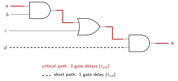
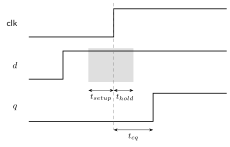

Logic synthesis maps RTL to a target netlist: standard cells for ASICs; LUTs, flops, RAM, and DSP blocks for FPGAs.
ASIC area may be expressed in gate equivalents (one GE is the area of a reference NAND2). FPGA area is usually reported by resource type.
// What you write: pure intent, no gate-level detail
module mux2 #(parameter W = 8) (
input logic [W-1:0] a, b,
input logic sel,
output logic [W-1:0] y
);
assign y = sel ? b : a;
endmoduleThe tool decides how that ternary becomes gates (AND-OR logic, a mux standard cell, or LUTs) from the target library and the timing constraints. Synthesis attempts to meet constraints; STA reports whether the constrained paths meet them under the analyzed models and corners.
Placement assigns cells to sites; clock-tree synthesis distributes the clock; routing creates wires. Extracted wire resistance and capacitance feed back into timing and power analysis. Check electrical limits, timing across modes/corners, and physical design rules; a synthesized netlist alone is not a finished chip.
Design for test (DFT) makes manufactured faults observable. Scan connects state elements into shift chains: shift in a state, capture the circuit response, and shift it out. Automatic test-pattern generation targets fault models such as stuck-at and transition faults; memory BIST exercises arrays. Manufacturing test complements functional verification—it does not prove the design specification correct.
Every combinational circuit has two delay characteristics:
| Term | Definition |
|---|---|
| Propagation delay | maximum time from an input change until the outputs reach their final value |
| Contamination delay | minimum time from an input change until any output starts to change |
says how long to wait before trusting the output; says how soon the old value stops being trustworthy. Between them the output can be anything.
Delays add along a path: the circuit’s is the sum of along the longest path (the critical path), and its the sum along the shortest.

A circuit can be data critical (critical path through the data inputs, e.g. a wide mux chain) or control critical (through a select/control signal). Which one it is tells you where to optimize: register the control earlier, or restructure the data path.
STA reports that a path fails; logical effort explains why and predicts the best fix on the back of an envelope. Normalize delay to a process-dependent unit ; an inverter driving an identical inverter has in this model:
| Gate | ||
|---|---|---|
| inverter | ||
| NAND2 | ||
| NAND3 | ||
| NOR2 |
These estimates assume a simple CMOS sizing model; actual delay depends on the library, input transition, and load.
For a path of stages, multiply the efforts: , for the whole path, for branching, giving path effort . Delay is minimized when every stage bears equal effort :
Worked example: inverter → NAND2 → inverter driving 8x the path’s input capacitance. , , , so and . Sizing falls out backwards from the load: each stage’s input capacitance is .
A flip-flop has its own timing aperture around the clock edge:
| Term | Definition |
|---|---|
| data stable at least this long before the edge | |
| data stable at least this long after the edge | |
| clock-to-Q propagation delay (max) | |
| clock-to-Q contamination delay (min) |

is the aperture time: data must hold steady through that whole window for a reliable capture.
For two flip-flops joined by logic of delay , sharing a clock of period : is the sequencing overhead, clock budget lost to the flops before any logic runs. Negative setup slack means the design cannot run at that frequency; fixes include faster logic, pipelining, clock-path adjustment, or a slower clock.
The same pair also imposes a lower bound, independent of clock period: If the path is too fast, data launched by an edge races through and corrupts the capture of the previous cycle’s data at the same edge. A hold violation cannot be fixed by slowing the clock; the fix is adding delay (buffers) on the offending path. Even direct flop-to-flop connections require hold analysis using library delays and clock skew.
When a combinational block’s exceeds the setup ceiling, split it with a register in the middle: two faster blocks, each meeting timing at a shorter period.
// Before: one combinational block, too slow for the target period
assign mid = heavy_function_1(a);
assign y = heavy_function_2(mid);
// After: a pipeline register splits the work across two cycles
always_ff @(posedge clk) mid_reg <= heavy_function_1(a);
assign y = heavy_function_2(mid_reg);An added register increases latency by one cycle. Shorter stages may increase clock frequency and throughput, but each stage adds register area, clock power, and sequencing overhead.
Each full-adder stage has carry-in-to-carry-out delay , so a 32-bit ripple adder needs For a target of 1 G adds/s (one per ns), split into four 8-bit slices, each followed by a register: per slice, leaving 200 ps for sequencing overhead.
| Stage | Computes | Also carries forward |
|---|---|---|
| 1 | bits 7:0 and carry into bit 8 | upper operands |
| 2 | bits 15:8 and carry into bit 16 | upper operands, low 8 sum bits |
| 3 | bits 23:16 and carry into bit 24 | upper operands, low 16 sum bits |
| 4 | bits 31:24 and final carry | low 24 sum bits |
Register every row’s outputs. Each transaction reaches the result
after four capture edges, with one new transaction accepted per edge.
Delay operands, completed sum bits, and valid together;
resetting the valid pipeline is sufficient when invalid data remains
unobservable.
Register insertion works on feedforward paths. It does not work on feedback:
always_ff @(posedge clk or posedge reset)
if (reset) acc <= '0;
else acc <= acc + data_in; // depends on its own previous valueSimply inserting a register in this feedback path changes the recurrence. Preserve one update per cycle by redesigning the arithmetic or applying a proven transformation such as lookahead; otherwise accept a lower update rate.
Real clock networks do not deliver the edge everywhere at once. For a launch flop A and capture flop B, Positive skew (capture clock late) helps setup and hurts hold: Useful skew delays a capture edge to improve setup at the cost of hold margin and timing on adjacent paths. Clock-tree design controls these arrival times; STA checks both constraints.
| Clock skew | Clock jitter | |
|---|---|---|
| Nature | spatial: different flops see the edge at different times | temporal: the same clock’s edges wander cycle to cycle |
| Source | unequal clock-tree paths and loads | PLL noise, supply (di/dt) noise, thermal |
| Constant? | roughly static for a given layout | random, time-varying |
| Useful? | can be intentional (useful skew) | never, pure margin loss |
Before clock-tree implementation, uncertainty may budget estimated skew and jitter. With propagated clocks, STA models clock-path skew explicitly; uncertainty covers remaining margins without double-counting it.
If a flop’s input changes inside its aperture, the output can settle into a metastable state, between logic levels, for an unbounded (usually short) time before randomly resolving. This is unavoidable when a signal crosses clock domains or arrives asynchronously: nothing guarantees the receiving flop’s aperture is respected. The mitigation is a 2-flop synchronizer: the first flop may go metastable, but it gets roughly one cycle, less clock-to-Q, routing, and setup overhead, to resolve before the second samples it.
The synchronizer reduces the probability of a propagated metastable event, quantified as mean time between failures: where is the resolution time allowed (about one period minus setup), and are flop metastability constants, and , are the sampling and input-change rates. The exponential is why adding a flop helps so dramatically, and why fast clocks and busy inputs hurt; at high frequency a 3-flop chain is sometimes needed to push MTBF to years or centuries.
A 2-flop synchronizer reduces metastability risk for a single-bit level held long enough to be sampled. Short pulses need stretching, toggle encoding with a rate limit, or a handshake. Synchronizing each bit of a bus independently lets different bits resolve on different edges, so the receiver can see a value that was never sent. The technique depends on what crosses:
| What’s crossing | Technique | Why it works |
|---|---|---|
| stable single-bit level | 2-flop synchronizer | allows metastability to resolve; may miss short pulses |
| multi-bit control | mux-recirculation / multi-cycle path: sync a 1-bit enable, hold the bus stable | only the enable is synchronized; the bus is stable when sampled |
| counter / pointer | register Gray code, synchronize each bit, constrain bus skew | adjacent source values change one bit; constraints prevent transitions from different source steps overlapping |
| streaming data | asynchronous FIFO, Gray-coded pointers | decouples the domains; pointers cross safely as Gray codes |
| handshake | req/ack, each synchronized into the other domain | any width, at round-trip latency cost |
Choose a crossing protocol that preserves the meaning of the whole value. Independently synchronized ordinary binary bits do not provide that guarantee.
Reset release has the same metastability hazard. Two disciplines:
| Synchronous reset | Asynchronous reset | |
|---|---|---|
| Applied | sampled only at the clock edge | immediate,
always_ff @(posedge clk or negedge rst_n) |
| + | timed as data; a glitch overlapping the edge can still be captured | works with no clock running (safe at power-up) |
| − | needs a running clock; adds a term to the data path | glitch-susceptible; release is a timing hazard |
Recovery and removal are the reset-release analogues of setup and hold: reset must release a minimum time before the edge (recovery) or stay asserted a minimum time after (removal), else the flop can go metastable. The standard fix asserts asynchronously but releases synchronously:
// Async-assert, sync-deassert reset synchronizer
logic rff1, rff2;
always_ff @(posedge clk or negedge rst_n_async) begin
if (!rst_n_async) {rff2, rff1} <= 2'b00; // async assert
else {rff2, rff1} <= {rff1, 1'b1}; // sync release, 2 edges
end
assign rst_n_sync = rff2; // one synchronizer per destination clock domainGlitch-prone reset pads additionally get a glitch filter or Schmitt-trigger input, since an async reset fires on any pulse meeting the flop’s minimum reset width.
STA applies the setup/hold equations exhaustively to every path, across all conditions, with no simulation vectors. It is the signoff answer to “does the chip meet timing”.
The per-path number STA reports: Slack passes; negative slack is a violation. Worst negative slack (WNS) and total negative slack (TNS) summarize how badly and how widely a design misses. Closing timing means driving all slack non-negative with faster cells, fewer levels, pipelining, useful skew, or a lower frequency.
Clocks and I/O timing are declared in an SDC (Synopsys Design Constraints) file; STA then checks four path groups:
| Path group | From → to |
|---|---|
| reg → reg | launch flop → capture flop |
| in → reg | input port → first flop (set_input_delay) |
| reg → out | last flop → output port (set_output_delay) |
| in → out | pure combinational feed-through |
Not every topological path is a real timing path; undeclared exceptions cause false violations and over-constrained synthesis:
| Exception | Meaning | Example |
|---|---|---|
| false path | exempt from ordinary setup/hold analysis | logically impossible paths or validated asynchronous crossings (which may still need CDC delay/skew constraints) |
| multicycle path | protocol guarantees extra settling cycles | coordinated launch/capture enables; configure the corresponding hold check |
set_case_analysis |
pin constant in this mode, prune through it | a test-mode mux select |
An exception must reflect a real functional guarantee. False paths may toggle (e.g. CDC paths); their correctness must follow from the protocol and remaining constraints.
Timing must hold at every manufacturing and operating condition, so STA runs at multiple PVT corners (process, voltage, temperature):
| Check | Worst corner | Why |
|---|---|---|
| setup (max delay) | often slow process, low V, high T | largest data delay |
| hold (min delay) | often fast process, high V, low T | smallest data delay |
Temperature inversion and clock/data path interactions can change the worst corner; analyze all required library corners.
On-chip variation (OCV) derating adds pessimism for device-to-device differences on one die. Signoff is multi-corner multi-mode (MCMM): every corner crossed with every functional mode (mission, test, low-power), which is why timing closure is a large part of tapeout cost.
Power constrains cooling and supply capacity; energy constrains battery life. The main components are:
| Component | Spent | Scales with |
|---|---|---|
| dynamic | only while signals switch | |
| static (leakage) | continuously, even idle | transistor leakage, worse as devices shrink |
Switching a node charges its load capacitance from the supply and later dumps the charge to ground, unrecovered:
| Term | Meaning | Lever |
|---|---|---|
| activity factor: expected number of 0→1 transitions per cycle (1 for the clock, 0 when static) | clock/power gating, fewer glitches | |
| switched capacitance (gate + diffusion + wire) | smaller cells, shorter wires, fewer levels | |
| supply voltage | the quadratic term, the strongest lever | |
| clock frequency | run no faster than the workload needs |
Halving quarters dynamic power, which is why voltage scaling dominates low-power design.
For independent successive samples, ; equiprobable bits give . Glitches add transitions. Short-circuit power is additional current while pull-up and pull-down networks briefly conduct together; it depends on slew, load, and technology.
Leakage consumes power even when clocks and data stop switching.
| Source | Cause |
|---|---|
| subthreshold | current through an “off” transistor; exponentially worse as drops |
| gate | tunneling through the thin gate dielectric (mitigated by high-k) |
| junction | reverse-biased junction current (BTBT, GIDL) |
The stack effect: a series stack of off transistors can leak substantially less than one off transistor, so a gate’s leakage depends on its input values; idle gates can be parked in low-leakage input states.
The clock has and often drives large capacitance. Clock gating stops clock transitions in idle blocks:
always_ff @(posedge clk) if (en) q <= d; // register enable; mapping depends on flowFor an AND-gated clock, hold the enable stable while the clock is high. An integrated clock-gating (ICG) cell typically uses a low-transparent latch before the AND; avoid an unconstrained combinational gate on the clock.
| Style | How the ICG gets there |
|---|---|
| inferred | enabled registers may map to ICG cells when ASIC clock-gating optimization is enabled |
| instantiated | instantiate the library ICG cell by hand (explicit, library-specific) |
On FPGAs, prefer dedicated register enables or clock-control resources; an enable does not automatically stop the clock tree.
Gating high in the distribution tree turns off whole branches of the high-activity clock network (most savings); fine-grained per-register-bank gating saves less each but catches more idle cases.
The combinational counterpart: hold an expensive block’s inputs steady on cycles when its result is discarded, so its internal nodes never toggle.
assign a_g = use_mult ? a : '0;
assign b_g = use_mult ? b : '0;
assign prod = a_g * b_g; // inputs stay constant while disabled; gating edges still switchBoth gating styles exploit the same rule: if a result is not used, do not pay to compute it.
A sleep transistor disconnects an idle block from a supply rail, greatly reducing leakage (a clock-gated block still leaks). Costs wake-up latency and area, and the block loses state, so it suits coarse-grained, long-idle blocks.
Low-Vt cells are faster but leak more; high-Vt cells save leakage where timing slack allows.
Exploits the term at runtime: lower the frequency to the workload’s minimum, then lower the voltage to the minimum supporting that frequency. Under the limited approximation , This cubic scaling is only a rough model; voltage floors, leakage, and nonlinear delay limit it. A controller monitors load and temperature and picks the (V, f) point from the chip’s characterized table.
Power gating and independent voltage control require power domains that RTL alone does not describe. Multi-Vt cell selection alone does not require separate domains. Power intent is captured separately in UPF (Unified Power Format, IEEE 1801), the way SDC carries timing intent. A design divides into power domains, each on, off, or at its own voltage; crossings between domains in different states need special cells:
| Cell | Where | Job |
|---|---|---|
| isolation | output of a domain that can power down | clamp the floating output to a known 0/1 |
| level shifter | between domains at different voltages | translate logic levels |
| retention register | in a domain that powers down but keeps state | tiny always-on shadow latch preserves the value |
| power switch | in the domain’s supply | the sleep transistor, under UPF control |
| always-on logic | control, retention, isolation enables | must stay powered to manage the rest |
A power state table (PST) specifies allowed domain states. Verify isolation, voltage translation, retention, and power sequencing for each supported mode.
| Quantity | Definition | Bounds |
|---|---|---|
| power | energy per time (W) | thermal/cooling limit, supply current |
| energy | power × time (J) | battery life, cost per computation |
Higher speed can reduce energy if finishing sooner permits sleep; lower voltage reduces switching energy but may extend runtime. Optimize joules per task under power and latency limits; energy-delay product (EDP) combines energy and delay.
Author: Sai Govardhan (saigov14@gmail.com)
Textbooks
Implementation references
Standards and papers
License: MIT.